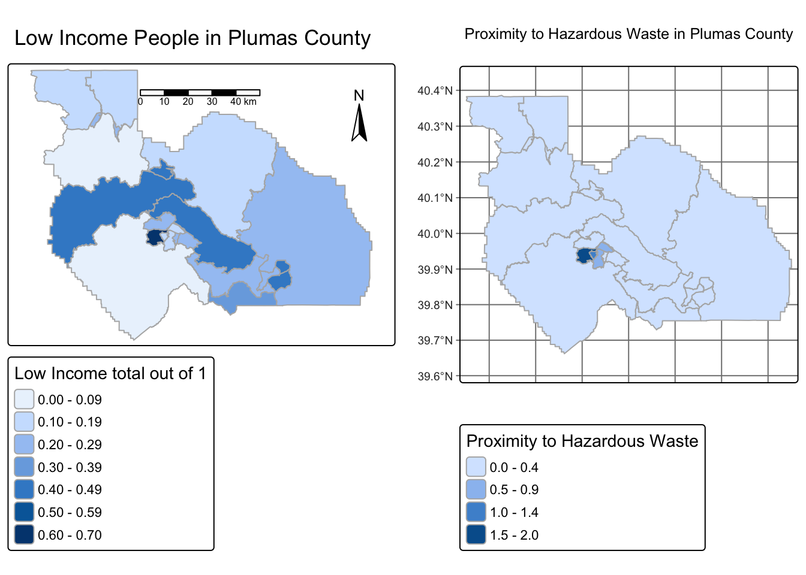

# First library required packages
library(tidyverse)
library(sf)
library(here)
library(sf) # for vector data (more soon!)
library(stars) # for raster data (more soon!)
library(tmap) # for static and interactive mapsHomework 1
Identifying Hazardous Waste concentration in Low income communites in Plumas County
Lucian Scher
This projects goal is to identify the relationship between Hazardous Waste and Low income communities in Plumas County.
Load Packages
Import Data
# read in geodatabase of EJScreen data at the Census Block Group level
ejscreen <- sf::st_read(here::here("data", "ejscreen","EJSCREEN_2023_BG_StatePct_with_AS_CNMI_GU_VI.gdb")) Reading layer `EJSCREEN_StatePctiles_with_AS_CNMI_GU_VI' from data source
`/Users/lucianscher/Desktop/MEDS/EDS-223/EDS223-HW1/data/ejscreen/EJSCREEN_2023_BG_StatePct_with_AS_CNMI_GU_VI.gdb'
using driver `OpenFileGDB'
Simple feature collection with 243021 features and 223 fields
Geometry type: MULTIPOLYGON
Dimension: XY
Bounding box: xmin: -19951910 ymin: -1617130 xmax: 16259830 ymax: 11554350
Projected CRS: WGS 84 / Pseudo-MercatorFilter data to Plumas County in CA
Set message = FALSE to hide unknown warning message
# filter to a California
california <- ejscreen %>%
dplyr::filter(ST_ABBREV == "CA")
# filter to a Plumas County
plumas <- ejscreen %>%
dplyr::filter(CNTY_NAME %in% c("Plumas County"))
# find the average values for all variables within counties
california_counties <- aggregate(california, by = list(california$CNTY_NAME), FUN = mean)Visualize data using the tmap Package
Map 1: Percentage of low income people
map1 <- tm_shape(plumas) +
# Percentage of low income people
tm_polygons(
fill = "LOWINCPCT",
fill.legend = tm_legend(title = "Low Income total out of 1"),
col = "gray70") +
# Compass and Scale bar
tm_compass(position = tm_pos_in("right", "top")) +
tm_scalebar(position = tm_pos_in("center", "top")) +
# Title
tm_title(
text = "Low Income People in Plumas County",
size = 1.1
)Map 2: Proximity to Hazardous Waste
map2 <- tm_shape(plumas) +
tm_graticules() +
tm_polygons(
fill = "PTSDF",
fill.legend = tm_legend(title = "Proximity to Hazardous Waste"),
col = "gray70") +
# Title
tm_title(
text = "Proximity to Hazardous Waste in Plumas County",
size = 1.2
)Side by side comparison of maps
tmap_arrange(map1, map2, ncol = 2)[plot mode] fit legend/component: Some legend items or map compoments do not
fit well, and are therefore rescaled.
ℹ Set the tmap option `component.autoscale = FALSE` to disable rescaling.
This side by side comparison of Plumas county shows the relationship between low income and hazardous waste. The dark blue area in the middle of both maps represents the town of Quincy, an area that much of the county industry, waste management and as shown, low income population are located in. What we can learn from this is how environmental injustices sometimes occur because the areas where communities put their undesirable necessities such as hazardous waste, are also where the cheapest housing is generally available. While Plumas county contains other areas with large populations of low income people, Quincy is the only area where low income is the majority, as well as where people are living the closest to hazardous waste.
Data Citation
United States Environmental Protection Agency. 2015. EJSCREEN. Retrieved: 10/5/2025, from data file given by EDS 223 instructors.